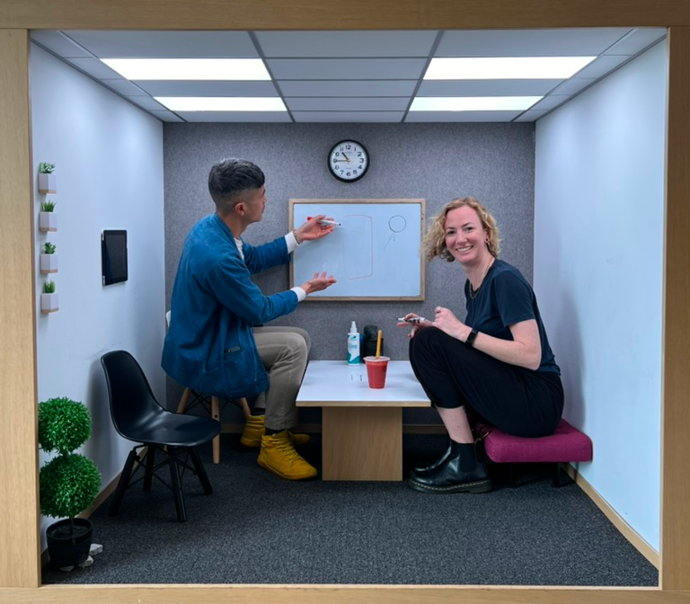

Achievements Charts? Vibes Lessons Work visasIn 2017 I left Melbourne for San Francisco. Nine years, a thousand meetings and one pandemic later, I’m home. Here’s what happened in between.
This story starts at Redbubble, a Melbourne company with a mission to support a global community of independent artists. I spent 5 years promoting artists to new and existing fans, and was the voice behind our social media accounts that spoke to a community of over 1M.
In 2013 we were a young brand with a developing voice and identity. By 2017 I had moved to the Bay Area to help our brand leap beyond the e-commerce noise machine. This was peak ‘startups are unstoppable’ era and I was there for the best of it.
Notable life achievements
I figured the local-brand-to-global-company pipeline should continue, so I became the lead copywriter for a Bay Area brand trying to make it big.
Our job was to make water (boring) seem fun and exciting, in a crowded room with a recent rebrand and little brand-recognition. We pushed our brand and creative storytelling through in-store, online and direct-to-consumer channels, then decided to go BIG and make a Super Bowl commercial.
Hint is now the largest privately-owned non-alcoholic beverage company in the US (a mouthful, just like the water).
Notable life achievements
I decided it was time to fulfill the Silicon Valley cliché and get a job in Big Tech. It was mid-pandemic, the world was mostly at home, and algorithmic feeds were getting stale — so this is where Messenger could solve some problems.
We built a brand new public-messaging product from the ground up, connecting people to interest-based communities through instant messaging. In 2022, Messenger Communities was publicly launched personally by Mark Z and soon accounted for 30% of all Messenger sends.
This was great until Messenger started drifting users away from the broader Meta ecosystem. We then became Team Fix-It with months of war rooms and late night design decks. I learned truly how fast a large team could move.
Notable life achievements
It was AI everywhere all at once. I worked on a suite of experimental user-facing tools, like an AI social assistant and summarization bot. This was where I learned that doubling down on simplicity and craft could lead to the best outcomes in an environment that moved at a dizzying pace.
My proudest work came in writing the governance and risk framework for how our own design teams used AI in their tooling. It was approved by Meta design leads and adopted company wide.
Notable life achievements
Most recently, I worked for Facebook on their social team. Our job was to help people see the content their friends are posting — a direct ask from Meta executive leadership (sometimes they’d say jump, you get the rest).
We built out a friends-only feed, taking users back to our “OG facebook” roots, and launched the Friends tab to the US in early 2025, alongside a “low key vibes” rebrand. I also learned that a 1px change can affect the company bottom line.
Notable life achievements
All data approximate; all trends real.
Fig. 1 — Hills, by commute
Hill (n.): any incline requiring a gear change, mental or bicycle.
Fig. 2 — “You’re still on mute” moments, annually
Incidents counted in both directions.
Fig. 3 — Instances of “circling back,” annually
Written and verbal. Self and others, within earshot.
Fig. 4 — Layoffs survived vs. reorgs weathered
Survived (v.): a reduction event occurred within my org and I remained employed.
Right now I could go deep into content design systems and strategy, or work horizontally across 0-1 projects and emerging tech.
I thrive in ambiguous problem spaces, I’m relentlessly curious and I learn fast.
If you’re looking for a writer-UX designer-strategist-content systems builder with an eye for systems and some stories from the water-coolers of Silicon Valley, then let’s chat.